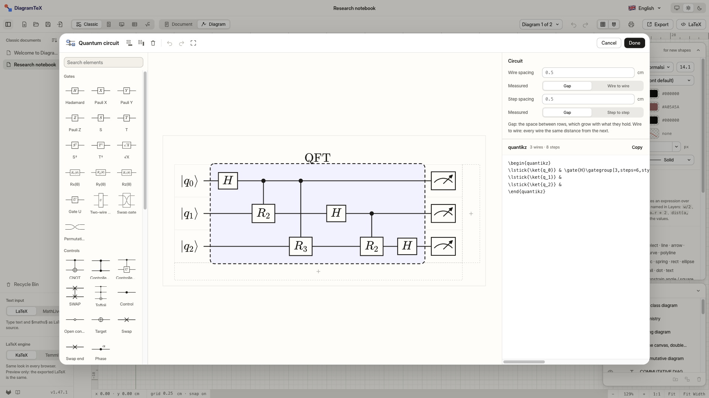
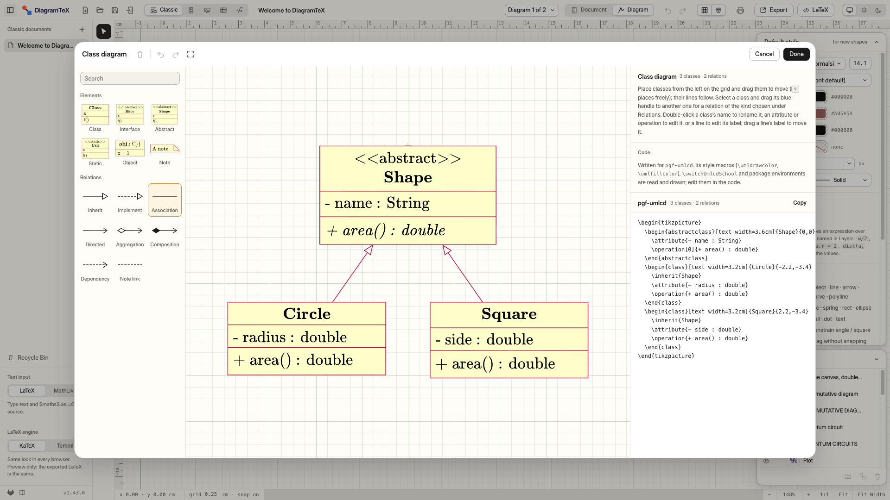
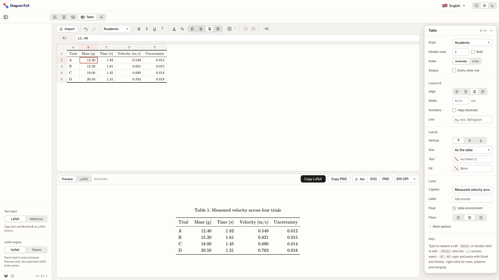
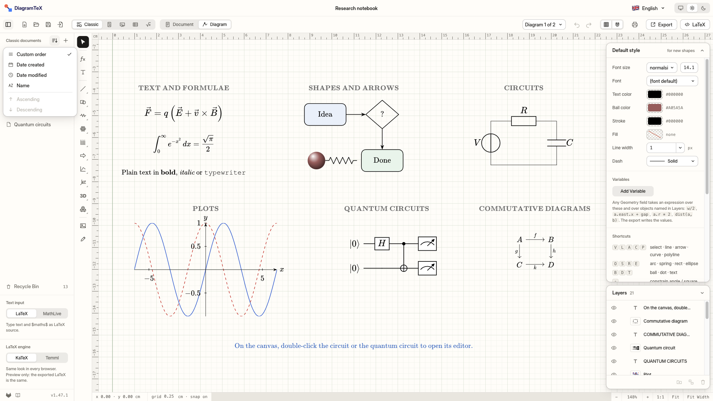

สารบัญ
วาดภาพ แล้วนำ LaTeX ไปใช้ได้เลย
DiagramTeX เป็นตัวแก้ไขแผนภาพที่สร้างโค้ด TikZ วาดด้วยเมาส์ พิมพ์ป้ายกำกับด้วยสูตร LaTeX แล้วคัดลอกโค้ดไปยัง Overleaf หรือเอกสาร LaTeX ของคุณ คู่มือนี้อธิบายตั้งแต่การวาดเส้นแรกจนถึงการส่งออกเอกสารทั้งฉบับ
- ฟรีและเปิดเผยซอร์สโค้ด
- ทำงานออฟไลน์
- ไม่ต้องมีบัญชี
- เอกสารอยู่ในเบราว์เซอร์ของคุณ
เลือก 🇬🇧 หรือ 🇹🇭 บนแถบด้านบนเพื่อเปลี่ยนภาษาของคู่มือและบันทึกภาษาที่ต้องการบนอุปกรณ์นี้ ในตัวแก้ไขก็มีตัวเลือกธงเช่นกัน ครั้งแรกจะใช้ภาษาอังกฤษ ข้อความที่ยังไม่มีคำแปลจะแสดงเป็นภาษาอังกฤษ ชื่อไฟล์ เนื้อหาเอกสาร สูตร และโค้ดส่งออกจะไม่เปลี่ยนตามภาษาของส่วนติดต่อ
เริ่มต้นใช้งาน
- เลือกเครื่องมือแล้ววาด เครื่องมืออยู่ทางซ้าย กด L เพื่อวาดเส้น R เพื่อวาดสี่เหลี่ยม หรือ T เพื่อพิมพ์ข้อความ
- พิมพ์สูตรในป้ายกำกับ ข้อความระหว่าง
$…$จะแสดงเป็นสูตร LaTeX ขณะพิมพ์ เช่น$\vec F = m\vec a$ - คัดลอก TikZ กด CtrlE เพื่อเปิดโค้ด หมายเหตุด้านบนระบุแพ็กเกจที่ต้องใช้
- วางแล้วคอมไพล์ ใส่โค้ดในเอกสาร โหลดแพ็กเกจตามรายการ แล้วคอมไพล์ด้วย pdfLaTeX
เมื่อเปิดครั้งแรก คุณจะเห็นไฟล์ต้อนรับที่มีคำแนะนำและตัวอย่างแผนภาพ เปิดวัตถุในตัวอย่างเพื่อดูวิธีสร้างได้ ทัวร์ต้อนรับสั้น ๆ จะชี้ส่วนซ้าย บน และขวาของหน้าต่าง ค้นหา “ทัวร์แนะนำ” (/) เพื่อดูอีกครั้ง ติดตั้งแอปด้วยปุ่ม Install ข้างตัวเลือกภาษาเมื่อเบราว์เซอร์รองรับ หรือเมนูติดตั้งของเบราว์เซอร์ (เพิ่มไปยังหน้าจอหลักใน Safari) เพื่อใช้งานโดยไม่ต้องเชื่อมต่ออินเทอร์เน็ต
ส่วนต่าง ๆ ของหน้าต่าง

แถบด้านบน
แถวแรกมีโลโก้ทางซ้าย ชื่อไฟล์ตรงกลาง และภาษาและรูปลักษณ์ทางขวา แถวที่สองมีคำสั่งเอกสารใหม่ เปิด บันทึก นำเข้า ตัวเลือกโหมด และตัวเลือกเอกสาร/แผนภาพที่อยู่ติดกัน ตามด้วยเลิกทำ ทำซ้ำ กริด จัดแนว พิมพ์ ส่งออก และ LaTeX
รายการไฟล์
แสดงไฟล์ประเภทที่กำลังใช้ คลิกขวาเพื่อเปลี่ยนชื่อ ทำสำเนา หรือลบ ปุ่มซ้ายสุดซ่อนรายการได้ ด้านล่างเลือกวิธีป้อนข้อความและเอนจินแสดงสูตร
แถบเครื่องมือ
ปุ่มที่มีสามเหลี่ยมเล็กตรงมุมเปิดเมนูเครื่องมือที่เกี่ยวข้องเมื่อวางเมาส์เหนือปุ่ม
แผงคุณสมบัติ
ลอยอยู่มุมขวาบน หากไม่ได้เลือกวัตถุ จะตั้งรูปแบบเริ่มต้นของรูปร่างใหม่และแสดงแป้นพิมพ์ลัด คลิกหัวแผงเพื่อยุบ
เลเยอร์
อยู่ใต้คุณสมบัติ เรียงจากบนลงล่าง คลิกเพื่อเลือก ลากเพื่อจัดลำดับ รูปตาใช้ซ่อน รูปกุญแจใช้ล็อก ดับเบิลคลิกชื่อเพื่อเปลี่ยนชื่อ
ไม้บรรทัดและแถบสถานะ
แสดงพิกัด TikZ เป็นเซนติเมตร ตำแหน่งเมาส์ ขนาดสิ่งที่เลือก กริด การจัดแนว และการซูม มีปุ่มขนาดจริง พอดีภาพ และพอดีความกว้าง
ที่การซูม 100% ระยะ 1 ซม. ใน TikZ เท่ากับ 40 พิกเซลบนพื้นที่วาด แกน y ของพื้นที่วาดชี้ลง แต่ของ TikZ ชี้ขึ้น กากบาทจาง ๆ คือจุดกำเนิด แอปใช้รูปลักษณ์สว่างหรือมืดตามระบบหรือตัวเลือกของคุณ ส่วนกระดาษวาดยังสว่างเพื่อให้เห็นสีเหมือนบนกระดาษจริง
โหมดทั้งห้า
เลือกโหมดบนแถบด้านบน คลาสสิก หน้ากระดาษ และไวท์บอร์ดเป็นไฟล์คนละประเภท รายการด้านซ้ายแสดงเฉพาะประเภทปัจจุบัน และคำสั่งเอกสารใหม่จะสร้างไฟล์ประเภทนั้น
คลาสสิก (Classic)
รวมแผนภาพกับเอกสารข้อความ สลับระหว่างมุมมองเอกสารและแผนภาพเพื่อเขียนหรือวาด
หน้ากระดาษ (Page)
วางข้อความ สูตร รูปร่าง กราฟ และรูปภาพได้ทุกตำแหน่งบน A4 หรือ Letter ส่งออกเป็นเอกสาร article โดยรักษาตำแหน่ง
ไวท์บอร์ด (Whiteboard)
พื้นที่วาดไม่จำกัด เลื่อนเพื่อย้ายมุมมอง จีบนิ้วหรือ Ctrl+เลื่อนเพื่อซูม 3–800% กด H หรือ Space แล้วลากเพื่อจับพื้นที่วาด
ตาราง (Table)
นำเข้าตารางจากสเปรดชีต CSV, Excel, Markdown, HTML หรือ LaTeX แก้ไขแล้วคัดลอกเป็น booktabs ดูหัวข้อ ตาราง
ด่วน (Quick)
ทำรูปเดียวโดยไม่ต้องมีไฟล์ สูตร: พิมพ์ LaTeX แล้วคัดลอกเป็น PNG ด้วย CtrlEnter หรือคัดลอกเป็น SVG เพื่อวางในสไลด์หรือแชต หรือเลือกบล็อกจากรายการของโหมดด่วนเพื่อวาดในตัวแก้ไขของบล็อกนั้น ไฟล์ที่เปิดอยู่ยังคงเปิดอยู่ ดูหัวข้อ โหมดด่วน
โหมดด่วน
- สูตร: ภาพตัวอย่างปรับตามที่พิมพ์ ทั้งแบบ LaTeX และ MathLive เลือกขนาด (Normal, Large, Huge) ความคมของ PNG (4× ถึง 32×) และพื้นหลังโปร่งใส แล้วคัดลอก PNG หรือ SVG หรือดาวน์โหลด
formula.png/formula.svg - บล็อก: ใต้สูตรเป็นรายการบล็อกทุกชนิดที่มีตัวแก้ไข (แผนภาพสลับที่ วงจรควอนตัมและวงจรไฟฟ้า ต้นไม้ กราฟ ZX ไฟน์แมน ไทมิง ออโตมาตา UML แผนผังคาร์โนห์ บิตฟิลด์ เคมี เรขาคณิต 2 และ 3 มิติ ฟิสิกส์) พร้อมจำนวนฉบับร่างของแต่ละบล็อก เลือกแล้วตัวแก้ไขจะเปิดในที่นั้น และฉบับร่างของบล็อกจะแสดงอยู่ใต้ชื่อ ฉบับที่เปิดอยู่มีพื้นทึบ เก็บได้บล็อกละ 24 ฉบับ ฉบับร่างใหม่จะเกิดขึ้นเมื่อกด ใหม่ เท่านั้น
- ฉบับร่างคงอยู่อย่างที่ทิ้งไว้: ไปบล็อกอื่นแล้วกลับมา ฉบับร่างจะเปิดด้วยการซูม สิ่งที่เลือก และประวัติการเลิกทำเหมือนเดิม การซูมและสิ่งที่เลือกยังอยู่แม้โหลดหน้าใหม่ ส่วนประวัติการเลิกทำอยู่จนกว่าจะปิดแท็บ
- ชื่อ: ฉบับร่างใช้เวลาที่แก้ไขล่าสุดเป็นชื่อ ดับเบิลคลิก กด F2 หรือคลิกขวาแล้วเลือก เปลี่ยนชื่อ… เพื่อตั้งชื่อ ลบชื่อออกเพื่อกลับไปใช้เวลา ฉบับร่างที่มีชื่อจะไม่ถูกลบเพื่อเปิดที่ให้ฉบับใหม่
- นำออก: อยู่ด้านขวาของแถบบนของตัวแก้ไข คัดลอก TikZ คัดลอกโค้ด ส่งออก คัดลอกหรือดาวน์โหลดรูปเป็น PNG (เลือกความคมและพื้นหลังโปร่งใสได้) หรือ SVG ส่วน เพิ่มลงในเอกสาร (หรือแผนภาพ หน้ากระดาษ ไวท์บอร์ด ตามโหมดของไฟล์) จะออกจากโหมดด่วนและเพิ่มรูปลงกลางมุมมองของไฟล์ที่เปิดอยู่
- คลิกขวา ฉบับร่างในรายการเพื่อเปิด เปลี่ยนชื่อ เพิ่มลงในไฟล์ ทำสำเนา หรือลบ หรือคลิกขวาที่ชื่อบล็อกเพื่อเริ่มฉบับใหม่
การวาด
เครื่องมือ
- เลือก (V) สูตร (M เริ่มกล่องข้อความด้วย
$…$) และ ข้อความ (T ลากเพื่อสร้างกล่องย่อหน้า) - เส้น: เส้นตรง ลูกศร ลูกศรสองหัว เส้นเชื่อมมุมฉาก เส้นเชื่อมโค้ง เส้นเบซิเยร์ เส้นผ่านจุด ปากกาความโค้ง เส้นหลายท่อน เส้นโค้งปิด ส่วนโค้ง และสปริง วาดโดยลากหรือคลิกจุดเริ่มและจุดสิ้นสุด กด Esc เพื่อยกเลิก ปลายเส้นเชื่อมจะติดกับรูปร่างที่เชื่อมอยู่
- เส้นโค้งผ่านจุด คือ
plot[smooth]ของ TikZ จึงตรงกับ PDF ช่อง ความตึง ในแผงกำหนดความมน (0 เป็นเส้นตรง 0.5 เป็นค่าปกติของ TikZ) ปากกาความโค้ง ทำงานแบบ Photoshop: คลิกจุดแล้วเส้นโค้งจะผ่านทุกจุดอย่างราบเรียบ ดับเบิลคลิก (หรือ Alt-คลิก) เพื่อทำมุม คลิกจุดแรกเพื่อปิดรูป หรือกด Enter / Esc เพื่อเปิดปลายไว้ หลังวาด ลากจุดเพื่อย้าย ลาก + เพื่อเพิ่มจุด ดับเบิลคลิกจุดเพื่อสลับระหว่างโค้งกับมุม และ Delete ลบจุดที่เลือก - เส้นทาง (Route): เลือกตรง มุมฉาก หรือโค้งในแผงคุณสมบัติ ลากจุดจับกลางของเส้นมุมฉากเพื่อย้ายข้อพับ หรือดึงช่วงตรงออกด้านข้างให้เป็นรูป U ตำแหน่งข้อพับจะคงอยู่จนรูปร่างเข้ามาใกล้กว่า 0.5 ซม. และกลับมาเมื่อย้ายออก ตัวเลือกทิศทางกำหนดการเข้าออกแนวนอนหรือแนวตั้ง
- ส่วนโค้งจากศูนย์กลาง (O): คลิกศูนย์กลาง จุดเริ่ม และจุดสิ้นสุด วาดได้ทั้งสองทิศและเกิน 180° กด Shift เพื่อกำหนดทีละ 15° ส่วนโค้งผ่านสามจุดให้คลิกปลายทั้งสองก่อน แล้วคลิกจุดบนส่วนโค้ง หลังวาด จุดจับปลายกำหนดมุม จุดจับกลางกำหนดรัศมี และจุดจับกรอบยืดเป็นวงรีได้
- รูปร่าง: สี่เหลี่ยมธรรมดา มน และตัดมุม รูปร่างพื้นฐาน 33 แบบ และสัญลักษณ์ผังงาน 28 แบบ ส่งออกเป็นเส้นทาง TikZ และใส่ข้อความกลางรูปได้
- สี่เหลี่ยมและวงรี (R, E): วางเมาส์หรือคลิกขวาที่ปุ่มเพื่อเลือกวิธีวาด เช่น มุมถึงมุม จากศูนย์กลาง หรือสามจุด วงกลมเลือกศูนย์กลาง เส้นผ่านศูนย์กลาง หรือสามจุดได้ แอปจำวิธีที่เลือก กด Shift เพื่อคงสัดส่วนสี่เหลี่ยมจัตุรัสหรือวงกลม
- ไฟฟ้า: ตัวแก้ไขวงจร สัญลักษณ์ตัวต้านทาน ตัวเก็บประจุ แหล่งจ่าย ไดโอด ทรานซิสเตอร์ ประตูลอจิก กราวด์ และรูปคลื่นต่าง ๆ
- ฟิสิกส์: รูปที่คำนวณจากพารามิเตอร์ในหกสาขา พร้อมสัญลักษณ์กลศาสตร์และทัศนศาสตร์ ดู รูปฟิสิกส์
- อื่น ๆ: แกน คลื่น วงเล็บปีกกา ไม้บรรทัด กริด ลูกบอล จุด ลูกศรทึบ 27 แบบ รูปภาพ (I) และดินสอ (N ปรับเส้นอิสระให้เป็นเส้นเบซิเยร์เรียบ)
เมื่อยืดรูปที่มีรายละเอียด ขนาดรายละเอียดจะคงเดิม เช่น คลื่นเพิ่มคาบ สปริงเพิ่มขด และไม้บรรทัดเพิ่มขีด ปรับคาบ ระยะขด ระยะขีด และขนาดช่องได้ในแผงคุณสมบัติ สำหรับเส้นหลายท่อน คลิกจุดเพื่อเลือก ลากเครื่องหมาย + เพื่อเพิ่มจุด และดับเบิลคลิกเพื่อลบจุด
รูปฟิสิกส์
เลือกสาขาจากเมนูฟิสิกส์แล้วคลิกพื้นที่วาดเพื่อเริ่มจากตัวอย่าง รูปจะคำนวณใหม่เมื่อเปลี่ยนพารามิเตอร์ เช่น ย้ายเลนส์แล้วรังสีและภาพเปลี่ยน เพิ่มความชันแล้วแรงและความเร่งเปลี่ยน ดับเบิลคลิก กด Enter หรือเลือก Edit Physics… เพื่อเปิดตัวแก้ไข
- สาขา: กลศาสตร์ (พื้นเอียง แรงเสียดทาน เครื่องแอตวูด สปริง ลูกตุ้ม โพรเจกไทล์ กลไกเชื่อมโยง) ทัศนศาสตร์ (เลนส์ กระจก ปริซึม ตัวกลาง โพลาไรเซอร์ ตัวแยกลำแสง อินเตอร์เฟอโรมิเตอร์) สนาม (เส้นสนาม ศักย์เท่ากัน จุดสนามเป็นศูนย์) คลื่น (การแทรกสอด ช่องแคบ เกรตติง บีต คลื่นนิ่ง) ปริภูมิเวลา และระดับพลังงาน
- จัดวัตถุ: เลือกจากทางซ้ายแล้วคลิกกริด กด Esc เมื่อเสร็จ จุดจับสี่เหลี่ยมใช้ย้าย วงกลมใช้หมุน และข้าวหลามตัดใช้ปรับขนาดหรือความยาวโฟกัส กด Alt เพื่อปิดการจัดแนวชั่วคราว ลูกศรเลื่อนวัตถุ Tab สลับวัตถุ CtrlD ทำสำเนา และ Delete ลบ
- วาดประกอบ: ใช้ข้อความ สูตร เส้น ลูกศร เส้นโค้ง ดินสอ รูปร่าง และสัญลักษณ์จากส่วนล่างของแถบเครื่องมือได้ ลากพื้นที่ว่างเพื่อเลือกหลายวัตถุ กด Shift แล้วคลิกเพื่อเพิ่ม ใช้ Space แล้วลากหรือเมาส์ปุ่มกลางเพื่อย้ายมุมมอง
- ผลลัพธ์: เมื่อไม่เลือกวัตถุ แผงด้านขวาแสดงค่าที่คำนวณพร้อมป้าย exact, ideal, approx หรือ schematic และเตือนเมื่อการตั้งค่าเป็นไปไม่ได้ ผลและภาพยังอยู่ระหว่างการทดลอง ควรตรวจสอบก่อนใช้
- ต้นฉบับ: หนึ่งวัตถุต่อบรรทัด เช่น
\lens[f=2](3)รองรับหน่วย500nm,30deg,2kgบรรทัดที่ไม่รู้จักจะถูกเก็บไว้ ไวยากรณ์นี้เป็นของ DiagramTeX ไม่ใช่ LaTeX ใช้ส่งออกหรือ Copy TikZ Code เพื่อรับ TikZ ที่คอมไพล์ได้พร้อมarrows.meta
การจัดแนวและความแม่นยำ
- กริดเริ่มต้นห่าง 0.25 ซม. วัตถุจัดแนวกับกริดและจุดของวัตถุอื่น กด Alt ค้างเพื่อวางอิสระ
- Shift จำกัดมุมทีละ 15° และรักษาสัดส่วนสี่เหลี่ยมจัตุรัสหรือวงกลม ลูกศรเลื่อนสิ่งที่เลือก พิมพ์พิกัด TikZ เป็นเซนติเมตรในแผงได้
- หมุน: วางเมาส์นอกกึ่งกลางขอบใดก็ได้ของกรอบจนเคอร์เซอร์เปลี่ยนแล้วลาก กด Shift เพื่อหมุนทีละ 15° หรือ CtrlR เพื่อหมุน 90°
การจัดวาง
- คลิกขวาที่วัตถุเพื่อคัดลอก ตัด วาง ทำสำเนา ลบ จัดกลุ่ม คัดลอก TikZ คัดลอกหรือบันทึกเป็นภาพ PNG พื้นขาว PNG โปร่งใส หรือ SVG พร้อมแบบอักษรสูตร รวมถึงรวมรูป จัดลำดับ หมุน จัดแนว และกระจายระยะ บนจอสัมผัส ให้แตะวัตถุค้างไว้ครึ่งวินาที
- จัดกลุ่มด้วย CtrlG เพิ่ม Shift เพื่อยกเลิกกลุ่ม คลิกสมาชิกในกลุ่มที่เลือกอีกครั้งเพื่อเลือกเฉพาะชิ้นนั้น
- รวมรูปร่างปิดด้วย Unite, Intersect, Subtract, Exclude หรือ Divide ผลเป็นบริเวณที่มีรูได้ และส่งออกด้วย
even odd rule - Ctrl] และ Ctrl[ ย้ายไปด้านหน้าหรือด้านหลัง หรือใช้การลากแถวในเลเยอร์
รูปแบบ
- สีและสีเติม: สีสำเร็จรูป ความโปร่งใส ไม่มีสี การไล่สีแนวเส้นหรือรัศมีพร้อมจุดสีที่ลากได้ และลวดลายเส้น กริด อิฐ จุด ส่งออกการไล่สีเป็น pgf shading และลวดลายด้วย
patterns.meta - เส้น: ความหนา รูปแบบเส้นประหรือกำหนด
on offเอง หัวลูกศร 27 แบบ เส้นคู่ เส้นคลื่น เส้นมีขีด และความทึบ - ข้อความ: แบบอักษร (รวมแบบอักษรไทย ครุฑ กินรี และลักษมัณ ซึ่งใช้แสดงในแอปเท่านั้น LaTeX จะใช้แบบอักษรของเอกสาร) ตัวหนา ตัวเอียง ขนาดตั้งแต่
\tinyถึง\Hugeหรือกำหนดเอง ความกว้างตัดบรรทัด และจัดชิดซ้าย กลาง ขวา หรือเต็มบรรทัด - เมื่อไม่เลือกวัตถุ การตั้งค่าในแผงจะเป็นรูปแบบเริ่มต้นสำหรับรูปร่างใหม่
ข้อความและสูตร
$…$เป็นสูตรในบรรทัด ส่วน$$…$$หรือ\[…\]เป็นสูตรแบบแสดงเต็มขนาด ส่งออกเป็น$\displaystyle …$ตัวเลือก Math style เปลี่ยนสูตรในสิ่งที่เลือกพร้อมกัน- แนะนำคำสั่ง: พิมพ์
\เพื่อดูคำสั่งและตัวอย่างแสดงผล ใช้ลูกศรขึ้นลงเลือก Enter หรือ Tab แทรก และ Esc ปิด มีคำสั่งที่ใช้บ่อยประมาณ 250 คำสั่งอยู่ด้านหน้า - การป้อนข้อความ: เลือก LaTeX เพื่อพิมพ์โค้ด หรือ MathLive เพื่อแก้ไขสูตรแบบภาพ ดับเบิลคลิกป้ายกำกับเพื่อแก้ไขตามโหมดที่เลือก
- เอนจิน LaTeX: KaTeX แสดงตัวอย่าง LaTeX ได้รวดเร็ว ส่วน Temml รองรับ LaTeX มากกว่าและใกล้เคียง TeX มากขึ้น ตัวเลือกนี้เปลี่ยนเฉพาะภาพตัวอย่าง ไม่เปลี่ยนโค้ดส่งออก
- ป้ายบนเส้นใช้ตำแหน่ง
autoและswapของ TikZ เพื่อวางตาม LaTeX
สูตรในช่องโค้ดจะแสดงเป็นสีเขียว ในสูตร เมื่อพิมพ์วงเล็บเปิด ระบบเพิ่มวงเล็บปิดให้ในตำแหน่งที่เหมาะสม หรือครอบข้อความที่เลือก พิมพ์วงเล็บปิดเพื่อข้ามตัวที่มีอยู่ และกด Backspace ระหว่างวงเล็บว่างเพื่อลบทั้งคู่
กราฟและรูปสามมิติ
กราฟ 2 มิติ (pgfplots)
คลิกเครื่องมือกราฟหรือลากกรอบ แต่ละกราฟมีหลายชุดข้อมูลได้ เขียนนิพจน์เช่น sin(x)*exp(-x/4) หรือป้อนข้อมูล รองรับกราฟฟังก์ชัน เส้น กระจาย พื้นที่ แท่ง เส้นชั้นระดับ แผนที่ความร้อน และวงกลม (หนึ่ง label value [#color] ต่อบรรทัด)
ชุดฟังก์ชันรองรับอสมการ บริเวณระหว่างเส้นโค้ง x ในรูป y พาราเมตริก เชิงขั้ว สมการโดยปริยาย F(x, y) = 0 จุด เวกเตอร์ สนามเวกเตอร์ และแผนภาพเฟส กำหนดตัวแปรร่วม เช่น a = 2, b = 0.5 ได้ ปรับแกน ช่วงค่า กริด คำอธิบาย สี และแถบสีในแผง ข้อผิดพลาดนิพจน์แสดงทั้งในแผงและพื้นที่วาด
เรขาคณิต 2 มิติ
เลือก 2D Geometry ในเมนูบล็อกเพื่อวาดเวกเตอร์ จุด การฉาย เช่น (Q |- P) มุม กราฟ และค่าการวัดที่เปลี่ยนตามจุด ดู บล็อก
สามมิติ
- กราฟ 3 มิติ: พื้นผิว
z = f(x, y)หรือตาข่าย พื้นผิวพาราเมตริก เส้นโค้งในปริภูมิ และกราฟกระจาย ใช้มุมมองview={az}{el}ของ pgfplots - รูปทรง TikZ: บริเวณทรงตันเหนือวงรี สี่เหลี่ยม หรือบริเวณเชิงขั้ว พร้อมแท่งรีมันน์ ทรงตันจากการหมุนแบบจาน วงแหวน หรือเปลือก และรูปทรงพื้นฐาน เช่น กล่อง ลูกบาศก์ ทรงกระบอก กรวย กรวยตัด ทรงกลม ครึ่งทรงกลม ทรงรี ทอรัส ปริซึม พีระมิด และทรงหลายหน้า เส้นที่ถูกบังเป็นเส้นประ ลดค่าแอลฟาของสีเพื่อมองทะลุได้
- เรขาคณิต 3 มิติ: เลือก 3D Geometry ในเมนูบล็อก ใช้
tikz-3dplotและหมุนภาพด้วยการลาก
บล็อก
บล็อกคือรูปทั้งรูปที่ใช้แพ็กเกจ LaTeX เฉพาะและมีตัวแก้ไขของตนเอง เพิ่มจากเมนูบล็อกรูปลูกบาศก์ ซึ่งจัดเป็นกลุ่มตามสาขา ได้แก่ ทั่วไป คณิตศาสตร์ ควอนตัมและฟิสิกส์ อิเล็กทรอนิกส์ คอมพิวเตอร์ และเคมี เมื่อวางจะเลือกบล็อกเท่านั้น ดับเบิลคลิก กด Enter หรือปุ่ม Edit… เพื่อแก้ไข หากต้องการวาดโดยไม่มีไฟล์ ให้เปิดจากโหมดด่วน บล็อกยังอยู่ระหว่างการทดลอง ควรตรวจสอบรูปที่คอมไพล์แล้วก่อนนำไปใช้

- คลิกวัตถุจากแถบทางซ้ายแล้วคลิกกริด หรือลากเข้ามา ปุ่มตัวอักษรใช้วางวัตถุที่ใช้บ่อย เมื่อหน้าต่างแคบลง แถบทางซ้ายจะลดจากแถวละสามรายการเป็นสอง แล้วเป็นหนึ่ง เพื่อให้พื้นที่วาดกว้างขึ้น
- โค้ดและรูปปรับตามกันทั้งสองทิศ ส่วนที่ไม่แก้ไขและคำสั่งที่วาดไม่ได้จะถูกเก็บและส่งออกตามต้นฉบับ พร้อมแจ้งบรรทัดที่เกี่ยวข้อง คอมเมนต์
%อยู่ข้างบรรทัดเดิมไม่ว่าจะแก้รูปอย่างไร (ลบได้เฉพาะในโค้ดเท่านั้น) - คลิกขวาเพื่อดูคำสั่งแทรก ลบ กลับทิศ ดัดโค้ง หรือแก้ป้าย ดับเบิลคลิกป้ายเพื่อแก้ในตำแหน่งนั้น
- Done หรือ CtrlEnter บันทึกบล็อกกลับและปิดตัวแก้ไข CtrlS บันทึกโดยยังเปิดไว้ Cancel หรือ Esc จะถามก่อนทิ้งการเปลี่ยนแปลง
วงจรไฟฟ้า circuitikz415 ชิ้นส่วน
ค้นหาชิ้นส่วนตามหมวด คลิกแล้ววางบนกริด หรือลากจากต้นถึงปลายเพื่อกำหนดความยาวชิ้นส่วนสองขั้ว สายไฟ (W) ติดกับขาและเคลื่อนตามชิ้นส่วน ทรานซิสเตอร์และไอซีได้ชื่ออัตโนมัติ เช่น Q1, U1 จึงส่งออกสายเป็น (Q1.B) ได้ คลิกสายไฟเพื่อเลือกทีละช่วง (ลากแล้วช่วงข้างเคียงจะยืดตามให้ยังต่อกันอยู่) ดับเบิลคลิกเพื่อเลือกสายทั้งเส้น ลากผ่านพื้นที่ว่างเพื่อเลือกหลายชิ้น ลากจากซ้ายไปขวาเลือกเฉพาะสิ่งที่อยู่ในกรอบทั้งหมด ลากจากขวาไปซ้ายเลือกทุกสิ่งที่กรอบแตะ กด CtrlA เพื่อเลือกทั้งหมด
แผงตั้งป้าย เช่น $R_1$ หมายเหตุ ลูกศรแรงดันและกระแส (เลือกด้านที่ลูกศรอยู่และทิศที่ชี้ ไอคอนหมุนตามชิ้นส่วน) ปลายเปิดหรือปิด การหมุน และการกลับด้าน ส่งออกเป็น scope พร้อม \usepackage{circuitikz} ส่วน Copy circuitikz Code ให้สภาพแวดล้อมแยก
Text (ในหมวด Wires & nodes) วางข้อความได้ทุกที่ เขียนเป็น \node at (x,y) {…} โค้ดจากเครื่องมืออื่นก็อ่านเป็นชิ้นส่วนได้ เช่น ตัวเลือกที่อยู่หลัง at ทรานซิสเตอร์ที่กลับด้านหรือย่อขยาย (yscale=-1) to ที่ไม่มีตัวเลือก -- cycle ระยะแบบเชิงขั้ว เช่น ++(90:0.5) \draw[thick, red] และการตั้งค่า \tikzstyle บรรทัดที่วาดไม่ได้จะเก็บไว้ตามที่เขียน

วงจรควอนตัม quantikz
กริดแบ่งตามสายและขั้น ปุ่ม H X Y Z S T U วางประตูแล้วเลื่อนไปขั้นถัดไป C จุดควบคุม O จุดควบคุมเปิด + เป้าหมาย และ M เครื่องวัด วางบนแถวหรือคอลัมน์เส้นประเพื่อเพิ่มสายหรือขั้น คลิกขวาเพื่อแทรก ลบ หรือล้างช่วง
{ ที่ไม่ได้ปิดในโค้ดจะรวมวงจรส่วนที่เหลือไว้ในช่องเดียว เหมือนใน LaTeX ข้อความใต้โค้ดจะแจ้งไว้ และจนกว่าจะปิด ช่องนั้นจะเก็บโค้ดไว้ตามที่เขียนไม่ว่าจะแก้รูปอย่างไร
จุดควบคุมเชื่อมกับประตูใกล้ที่สุดในขั้นเดียวกัน ลากจุดจับสีน้ำเงินเพื่อเปลี่ยนสาย ลากขอบบนล่างของประตูเพื่อคร่อมหลายสาย หรือลากมุมเพื่อกำหนดขนาดขั้นต่ำ ลากองค์ประกอบเพื่อย้าย หรือลากพื้นที่ว่างในช่องเพื่อเลือกช่วง ดับเบิลคลิกป้ายประตู กลุ่ม หรือ slice เพื่อแก้ไข
แผงตั้งชนิดสาย quantum, classical หรือ bundle ป้าย กลุ่ม และ slice ใช้ Label above หรือ Border: None เพื่อทำป้ายไม่มีกรอบ เส้นประสีน้ำเงินที่ใช้แสดงกลุ่มในตัวแก้ไขจะไม่ถูกส่งออก คลิกขวาช่วงเพื่อ Group Selection, Label Above Selection หรือ Delete Group เลือกช่องในกลุ่มแล้วลากขอบเพื่อปรับช่วง กำหนดป้ายด้านบน ด้านล่าง หรือทั้งคู่ และ From wire / To wire ของ slice ได้ ส่งออกใน quantikz พร้อม \usetikzlibrary{quantikz2}
แผนภาพสลับที่ tikz-cd
เลือกช่องแล้วพิมพ์วัตถุ หรือลากจากแถบเครื่องมือ ลากระหว่างช่องเพื่อวาดลูกศรตามรูปแบบที่เลือก เช่น inclusion, onto, dashed, implies หรือ harpoon แผงตั้งป้าย ด้านของป้าย หัวลูกศร เส้น ช่องว่างจุดตัด ความโค้ง และการเลื่อน ใช้ Reverse เพื่อสลับปลาย
ลูกศรหนึ่งเส้นมีป้ายได้หลายป้าย (เช่น ใกล้ต้นหนึ่งป้าย ใกล้ปลายหนึ่งป้าย) กด เพิ่มป้ายกำกับ เพื่อเพิ่ม ปุ่มตัวเลขเลือกป้ายที่ช่องในแผงแก้ไข และ ลบป้ายกำกับ เพื่อเอาออก
แผนภาพสลับที่ xymatrix
ใช้ตัวแก้ไข CD แต่เขียน \xymatrix{…} ของแพ็กเกจ xy รองรับลูกศร \ar@{->>}[r]^{f} ความโค้ง @/^1pc/ การเลื่อน @<.5ex> และระยะ @R=, @C= ส่งออกพร้อม \usepackage[all]{xy}
Convert to tikz-cd และ Convert to xymatrix ใช้แปลงระหว่างแพ็กเกจ แปลงกลับก่อนแก้ไขจะคืนโค้ดต้นฉบับ ส่วนที่อีกแพ็กเกจรองรับไม่ได้จะแจ้งไว้
ต้นไม้ forest
ใช้ทำต้นไม้วากยสัมพันธ์ ผังองค์กร โฟลเดอร์ การตัดสินใจ และความน่าจะเป็น เริ่มจากแม่แบบ เพิ่ม ย้าย และปรับรูปแบบโหนดด้วยแป้นพิมพ์หรือการลาก ปุ่มทิศทางทำงานตามทิศการเติบโตของต้นไม้ และโค้ดปรับตามรูป
โหนดล่องหน คงตำแหน่งไว้แต่ไม่ถูกวาด ใช้ ล่องหน ในแถบเครื่องมือ สวิตช์ แสดง ในแผง หรือคลิกขวาแล้วเลือก ทำให้ล่องหน (ทำให้มองเห็น เพื่อคืนค่า)
กราฟ TikZ graphs
ใช้วาดกราฟของโหนดและเส้นเชื่อมแบบใดก็ได้ วางโหนด (วงกลม กล่อง กล่องมุมมน วงรี ข้าวหลามตัด จุด กล่องข้อความ) จากแถบเครื่องมือ หรือดับเบิลคลิกกริด Shift-คลิกหรือลากกรอบเพื่อเลือกหลายโหนดแล้วย้าย ปรับรูปแบบ จัดแนว หรือเชื่อม ดับเบิลคลิกโหนดหรือเส้นเชื่อมเพื่อใส่ป้าย
ลากจุดจับสีน้ำเงินของโหนดที่เลือกไปยังโหนดอื่นเพื่อสร้างเส้นเชื่อม ลากกลับมาที่ตัวเองเพื่อสร้างลูป หรือลากไปที่ว่างเพื่อสร้างโหนดใหม่ ลากจุดจับกลางเส้นเพื่อดัดโค้ง คลิกขวาเพื่อกลับทิศหรือเปลี่ยนปลาย
จากข้อความ: วางเมทริกซ์ประชิด รายการประชิด รายการเส้นเชื่อม DOT, Mermaid, JSON หรือ \graph ของ TikZ แล้วระบบจะวาดกราฟให้ หรือเริ่มจาก K₅ กราฟปีเตอร์เซน ต้นไม้ และกริด จัดวางอัตโนมัติ ได้แบบสปริง วงกลม เป็นชั้น หรือกริด ส่งออกด้วย \usetikzlibrary{graphs} และคอมไพล์ด้วย pdfLaTeX ได้
แผนภาพ ZX zx-calculus
วางสไปเดอร์ Z และ X กล่อง Hadamard จุด และลูป หรือกด Z X H N L ลากจุดจับสีน้ำเงินจากโหนดเพื่อเชื่อมสาย คลิกสายเพื่อเลือกรูปแบบ ตัวทำเครื่องหมาย เส้นคลาสสิก หนา หรือประ แผงตั้งสี เฟส และตำแหน่งเฟส
แผนภาพไฟน์แมน tikz-feynman
วางจุดยอดแบบจุด บล็อบ จุดกากบาท หรืออนุภาคบนกริดเซนติเมตร แล้วลากจุดจับสีน้ำเงินไปยังจุดอื่นเพื่อเชื่อมตัวแพร่ รองรับเฟอร์มิออน โฟตอน กลูออน สเกลาร์ ghost, Majorana และโบซอน (ปุ่ม F P G S M B L)
ตั้งป้าย ลูกศรโมเมนตัม การโค้ง ครึ่งวงกลม และ insertion ได้ คลิกขวาเพื่อกลับทิศ ส่งออกด้วย \usepackage[compat=1.1.0]{tikz-feynman} และใช้ pdfLaTeX ได้ เพราะกำหนดตำแหน่งทุกจุดยอดไว้แล้ว
เรขาคณิต 2 มิติ TikZ
ลากพื้นที่ว่างจากซ้ายไปขวาเพื่อเลือกวัตถุที่อยู่ภายในทั้งหมด หรือขวาไปซ้ายเพื่อเลือกทุกวัตถุที่กรอบแตะ กด Shift เพื่อเพิ่ม ใช้ Space แล้วลากหรือลูกศรเพื่อย้ายมุมมอง ลากจุดเพื่อย้ายบนกริด 0.05 หน่วย กด Alt เพื่อย้ายอิสระ พิกัดเชิงขั้วจะคงรูปแบบเดิม
ลากขอบหรือศูนย์กลางวงกลมเพื่อย้าย วางเมาส์บนขอบแล้วลากสี่เหลี่ยมเล็กมุมขวาบนเพื่อปรับรัศมี รัศมีที่คำนวณจากโค้ดจะไม่มีจุดจับนี้ ลากเส้น ขอบ หรือด้านในรูปเพื่อย้ายทุกจุดที่ใช้ร่วมกัน จุดมีชื่อจะเปลี่ยนตรงที่นิยาม ทำให้รูปอื่นที่อ้างถึงเคลื่อนตาม ส่วนจุดที่คำนวณ เช่น การฉาย calc ลูป และกราฟ จะไม่ถูกย้ายด้วยวิธีนี้
Shift ขณะลากจุดใช้จัดแนวกับพิกัดจำนวนเต็มหรือมุมทีละ 15° สำหรับปลายเส้น Alt+Shift จำกัดเฉพาะมุม CtrlA เลือกทั้งหมดรวมกริด Delete ลบ Esc หรือคลิกพื้นที่ว่างยกเลิกการเลือก
เพิ่มแกน กริด จุด ป้าย เส้น เวกเตอร์ การฉาย รูปหลายเหลี่ยม วงกลม เครื่องหมายมุมและมุมฉาก รวมถึงกราฟฟังก์ชัน เชิงขั้ว และพาราเมตริกได้ (ปุ่ม A, G, P, T, S, V, C, M, F) วางเครื่องหมายมุมโดยเลือกแล้วคลิกในมุมระหว่างสองเส้น ลากจุดจับเพื่อปรับขนาดและระยะป้าย
คัดลอกหรือตัดคำสั่งที่เลือกด้วย Ctrl/⌘+C หรือ X แล้ววางด้วย V ชื่อจุดซ้ำจะเปลี่ยนให้อัตโนมัติ เลือกส่วนของเส้นตรงแล้วเพิ่มค่าการวัด Δx, Δy, ความยาว หรือมุม ค่าคำนวณในโค้ดด้วย \pgfmathprintnumber จึงเปลี่ยนตามจุด แผงมีตัวเลื่อนสำหรับค่าตัวเลข และโหลด angles, quotes เมื่อใช้เครื่องหมายมุม
เรขาคณิต 3 มิติ tikz-3dplot
ลากพื้นที่ว่างเพื่อหมุนมุมมอง ลูกศรหมุนทีละ 5° หรือ Shift ทีละ 15° ลากจุดเพื่อย้ายในระนาบ กด Shift ค้างเพื่อย้ายขึ้นลง เพิ่มแกน กรอบหมุน จุดคาร์ทีเซียนหรือทรงกลม เวกเตอร์ เส้น การฉาย ระนาบ พื้นผิว สามเหลี่ยม วงกลม ทรงกลม กล่อง เส้นโค้ง และส่วนโค้งมุมได้
อ่านและวาดลูป \foreach ค่าจาก \def และ scope การย้ายจุดที่นิยามด้วยค่าจาก \def จะเขียนค่ากลับที่นิยามนั้น
แผนภาพเวลา tikz-timing
เลือก High, Low, High-Z, Unknown, Data, Clock, Toggle, Metastable, Glitch, Gap หรือ Hatched แล้วลากตามแถวเพื่อระบายสัญญาณ หรือคลิกจุดเริ่ม ชี้ไปยังจุดสิ้นสุด แล้วคลิกอีกครั้ง แถวจะแสดงผลขณะชี้ คลิกสองครั้งบนช่วงสัญญาณเพื่อระบายเฉพาะช่วงนั้น และกด Esc เพื่อยกเลิกการระบายที่ยังไม่วาง ลากรายการจากแผงทางซ้ายมาวางบนภาพได้เช่นกัน: ค่าลงบนช่วงสัญญาณ แถวลงระหว่างแถว ลูกศรลงบนขอบ โดยเห็นตำแหน่งขณะลาก ลากบนพื้นที่ว่างเพื่อเลือกหลายช่วงสัญญาณ หรือคลิกช่วงหนึ่งแล้วกด Shift คลิกอีกช่วง จากนั้นเลือกค่าเพื่อระบายทั้งหมด กด Delete เพื่อลบ หรือตั้งค่าและความกว้างพร้อมกันในแผงคุณสมบัติ ลากขอบเพื่อเลื่อนจุดเปลี่ยน กด Shift เพื่อเลื่อนส่วนที่เหลือของแถวด้วย ช่อง Data ใส่สีหรือลายได้
Interval และ Delay วาดลูกศรมีป้ายระหว่างขอบสัญญาณ เช่น setup, hold และ clock-to-output ส่วน Break (B) เพิ่ม // ทุกแถว ลากผ่านพื้นที่ว่างเพื่อเลือกหลายช่วง (ซ้ายไปขวาเลือกช่วงที่อยู่ในกรอบทั้งหมด ขวาไปซ้ายเลือกทุกช่วงที่กรอบแตะ) หรือกด CtrlA เพื่อเลือกทุกช่วง ข้อความทั่วไปจะถูก escape ให้ ใช้ $x_1$ เมื่อต้องการตัวห้อย
เครื่องสถานะ TikZ automata
วางสถานะปกติ เริ่มต้น ยอมรับ หรือทั้งสองแบบ ลากจุดจับสีน้ำเงินไปยังสถานะอื่นเพื่อสร้างการเปลี่ยนสถานะ หรือลากกลับตัวเองเพื่อสร้างลูป ปุ่ม I, A, L ใช้สลับสถานะเริ่มต้น ยอมรับ และเพิ่มลูป Auto layout จัดสถานะเป็นชั้นหรือวงกลมและปรับความโค้งเพื่อหลบวัตถุ
แผนภาพคลาส UML pgf-umlcd

เลือก Blocks → UML เพื่อเริ่มจากตัวอย่าง รองรับ class, interface, abstract class, static class, object และ note วางบนกริดหรือลากจุดจับของกล่องไปพื้นที่ว่างเพื่อสร้างวัตถุที่เชื่อมกัน ดับเบิลคลิกชื่อเพื่อเปลี่ยนชื่อพร้อมทุกจุดอ้างอิง หรือแก้แอตทริบิวต์และเมธอดในตำแหน่งนั้น ลากป้ายของเส้นเพื่อเปลี่ยนตำแหน่ง
ความสัมพันธ์มี inheritance, implementation, association, aggregation, composition, dependency และ note link ลากจุดจับระหว่างกล่องแล้วตั้งชื่อบทบาท จำนวน และทิศทางในแผง เส้น \draw ที่เขียนเองเคลื่อนตามคลาส ส่งออกพร้อม \usepackage{pgf-umlcd} และนำเข้ากลับได้
แผนภาพลำดับ UML pgf-umlsd
เลือก Blocks → Sequence เพื่อเริ่มตัวอย่าง client, server และฐานข้อมูล เพิ่ม instance (I) หรือ thread (T) ลากด้านข้างเพื่อจัดลำดับ เพิ่ม call, self call, message หรือ call ไม่มีค่าคืนด้วย C, S, M, A โดยลากระหว่าง lifeline ข้อความภายใน activation จะซ้อนใน call นั้น
แผงตั้งข้อความ ค่าคืน ระยะ และความหน่วง B ครอบข้อความที่เลือกด้วยกรอบและคำอธิบาย Alt/⌥+ลูกศรขึ้นลงย้ายลำดับข้อความ ส่งออกด้วย \usepackage{pgf-umlsd} และนำเข้า sequencediagram กลับได้ ข้อความของ message ใช้เป็นชื่อโหนดด้วย จึงมีข้อจำกัดกับคำสั่งและวงเล็บ ซึ่งแผงจะแจ้งเตือน
แผนผังคาร์โนห์ karnaugh-map2–6 ตัวแปร
คลิกช่องเพื่อวนค่า 0, 1 และ don't care หรือระบายด้วยปุ่ม 1, 0, D, E แถวและคอลัมน์เรียงตามรหัสเกรย์ ลากช่องเพื่อจัดกลุ่ม กลุ่มที่ผ่านขอบจะวนไปอีกด้าน แผงตรวจกลุ่มและแสดงฟังก์ชันที่ลดรูป Find Groups หาชุดกลุ่มที่ครอบคลุมโดยใช้จำนวนน้อยที่สุด
บิตฟิลด์ bytefieldโครงสร้างแพ็กเก็ตและรีจิสเตอร์
เริ่มจากส่วนหัวคล้าย IPv4 เพิ่ม Bit box (B), Word box (W), Bits (I), Skipped words (K) หรือ Header (H) ลากขอบขวาเพื่อปรับจำนวนบิต ขอบล่างของ word box เพื่อปรับความสูง S แบ่งช่อง M รวมกับช่องถัดไป Shift+M รวมกับช่องก่อนหน้า ดับเบิลคลิกหรือ Enter เพื่อแก้ป้าย
ลากข้ามช่อง หรือ Shift+คลิก/ลูกศร เพื่อเลือกช่วง Ctrl/⌘+A เลือกทั้งหมด R หรือ L เพิ่มวงเล็บปีกกาพร้อมป้าย Delete ลบพร้อมกัน ลากปลายวงเล็บเพื่อเปลี่ยนแถวที่ครอบ แผงกำหนดขอบ สีเติม รูปแบบ ความกว้าง ขนาดบิต และ endianness ส่วนโค้ดที่ไม่แตะจะคงเดิม
เคมี chemfig
เลือกอะตอมแล้วลากจุดจับสีน้ำเงินเพื่อเพิ่มพันธะ โดยจัดมุมทีละ 15° กด C, H, N, O เพื่อเปลี่ยนอะตอม หรือดับเบิลคลิกเพื่อพิมพ์ป้าย เช่น NH_2 ดับเบิลคลิกพันธะเพื่อวนเดี่ยว คู่ สาม แถบเครื่องมือมีวงแหวน 3–7 เหลี่ยม เบนซีน อะโรมาติก หมู่ฟังก์ชัน ประจุ และคู่อิเล็กตรอนโดดเดี่ยว ลากรายการไปวางบนอะตอมหรือพันธะได้ แผงตั้งคู่อิเล็กตรอนโดดเดี่ยว (จุดหรือขีด) และอนุมูลอิสระของอะตอม สีของอะตอม (ครอบแต่ละอะตอมด้วย \textcolor คั่นด้วย | เพื่อให้ chemfig ยังแยกอะตอมได้) ประจุบางส่วน (δ+ หรือ δ−) พร้อมตำแหน่งและระยะ ซึ่งวางห่างจากอะตอมให้ไม่ทับกัน (chemfig วางกึ่งกลางของประจุบนขอบอะตอม จึงเขียนระยะไว้ด้วย เช่น 90:4pt=$\delta+$) และลักษณะของพันธะ พันธะเดี่ยว คู่ หรือสามมีชนิดเส้น (ทึบ ประ จุด หรือไม่มี คือไม่วาดแต่คงตำแหน่งไว้) ความหนา และสี พันธะลิ่มมีสี และขนาดลิ่มของโมเลกุล (\chemfig[cram width=…]) เพราะ chemfig กำหนดขนาดลิ่มได้ทั้งโมเลกุลหรือทั้งภาพ ไม่ใช่ทีละพันธะ ค่าของพันธะแต่ละเส้นมีผลเหนือ พันธะทั้งหมด เช่นเดียวกับ chemfig พันธะที่ต่อกับหมู่อย่าง CH_2OH เลือกอะตอมที่ต่อได้ด้วย ออกจาก และ เข้าที่อะตอม คลิกขวาเพื่อเปลี่ยนชนิดพันธะ ซ่อนพันธะ / แสดงพันธะ หรือลบอะตอม พันธะ วงแหวน โมเลกุล หรือลูกศร
ลูกศรปฏิกิริยาสร้าง \schemestart … \schemestop พร้อมสำเนาโมเลกุลสำหรับผลิตภัณฑ์ ลากหัวลูกศรเพื่อหมุนและยืด ลูกศรที่ไม่มีอะไรต่อท้ายจะจบที่กรอบเส้นประ คลิกเพื่อพิมพ์สารถัดไปเป็นโค้ด chemfig (เช่น CH_3-COOH) หรือวางอะตอม วง หรือหมู่ลงในกรอบ Merge รวมสาร ใส่วงเล็บรอบโมเลกุลหรือรวมขั้นเป็น \subscheme ได้
การตั้งค่า: เมื่อไม่ได้เลือกอะไร แผงจะตั้งค่าทั้งภาพ (\setchemfig) ได้แก่ ความยาวพันธะ ระยะพันธะคู่ ความกว้างลิ่ม ขั้นมุม ความยาวคงที่ ความกว้างและระยะขีดของลิ่มขีด ขีดสี่เหลี่ยม (cram rectangle) และขนาดวงกลมในวงแหวน ความหนา สี และชนิดเส้นของ พันธะทั้งหมด (bond style ตัวเลือกของพันธะแต่ละเส้นมีผลเหนือกว่า) และในแผนปฏิกิริยา ระยะของสาร ลูกศร และชื่อ หัวลูกศร (แบบ chemfig, Stealth, LaTeX หรือแบบเปิด) และสีกับชนิดเส้นของลูกศรทุกเส้น ลูกศรที่เลือกตั้งสีและเส้นของตัวเองได้ ด้านของวงแหวนที่เลือกตั้งวงกลมในวงแหวนได้ (เปิดหรือปิด ส่วนโค้ง สี และเส้น) โค้ด chemfig 1.x (คำสั่งตั้งค่าที่ chemfig 1.4 ยกเลิก เช่น \setatomsep, \setcrambond, \setarrowdefault หรือ \enablebondjoin รวมถึง \chemfig* และ \chemfig[…][…]) ซึ่ง chemfig รุ่นปัจจุบันไม่รองรับ จะถูกวาดและแปลงเป็นรูปแบบปัจจุบันเมื่อวางหรือนำเข้า และเมื่อเปิดในตัวแก้ไข (มีข้อความแจ้งสิ่งที่เปลี่ยน กดเลิกทำหรือยกเลิกเพื่อคงโค้ดเดิม) ระยะของ \setandsign จะเขียนลงใน \+ แต่ละตัว และวาด \resetchemfig, \setcharge, \resetcharge รวมถึงค่าของโมเลกุลเดียว \chemfig[atom sep=2em]{…} ได้ด้วย ความยาวต้องมีหน่วย เช่น 2.5em ลบช่องว่างเพื่อกลับไปใช้ค่าเริ่มต้นของ chemfig
ชื่อสาร: สารที่ยังไม่มีชื่อจะมีกรอบเส้นประอยู่ด้านล่าง คลิกที่กรอบเพื่อพิมพ์ชื่อในตำแหน่งนั้น หรือดับเบิลคลิกที่ชื่อเพื่อแก้ไข (ShiftEnter ขึ้นบรรทัดใหม่) ชื่อเขียนเป็น \chemname ช่อง ชื่อ ในหมวด สารประกอบ ของแผงทำได้เช่นกัน ลบข้อความเพื่อเอาชื่อออก
ลูกศรโค้ง: คลิกอะตอมหรือพันธะต้นทางและปลายทางเพื่อสร้าง @{name} และ \chemmove ลากจุดจับเพื่อดัดโค้งและตั้งหัวเส้นกับสีในแผง Delete ลบ รองรับ \definesubmol พร้อมอาร์กิวเมนต์ \setchemfig และ \hreac … \endhreac อะตอมจากโมเลกุลย่อยจะแก้กลับในนิยาม \definesubmol
แล็บเคมี tikz-chemlab
อุปกรณ์ห้องปฏิบัติการ เขียนสำหรับ tikz-chemlab (pst-labo ฉบับ TikZ) แถบเครื่องมือมีเครื่องแก้ว (หลอดทดลอง ขวดก้นกลม บีกเกอร์ ขวดรูปชมพู่ ขวดสารเคมี ขวดวัดปริมาตร กระจกนาฬิกา กระบอกตวง กระบอกตวงขนาดเล็กและที่มีของเหลว กรวย กรวยแยก ปิเปตต์ หลอดคว่ำ และขวดก้นกลมสำหรับไหลย้อน) ชุดการทดลอง (หลอดทดลองหรือขวดบนตะเกียงบุนเซน การเก็บแก๊สเหนือน้ำ การไหลย้อน การไทเทรต การกลั่น และรูปการกลั่นลำดับส่วนของแพ็กเกจ) อุปกรณ์อื่น (ตะเกียงบุนเซน ทั้งแบบมีตะแกรงและเปลวไฟอย่างเดียว ขาตั้ง เตาไฟฟ้า เครื่องกวนแม่เหล็ก แท่งกวนแม่เหล็ก เครื่องวัด pH จานตกผลึก อ่างให้ความร้อน เทอร์โมมิเตอร์ คอลัมน์กลั่นลำดับส่วน เครื่องควบแน่นแบบลีบิกและแบบกระเปาะ ที่วางหลอดทดลอง และหยดของเหลว) และป้ายกำกับพร้อมเส้นชี้ ถัดลงไปเป็นหมวดที่พับไว้ ได้แก่ชิ้นส่วนที่แพ็กเกจใช้ประกอบอุปกรณ์ (ตัวภาชนะ ขอบ ขีดบอกปริมาตร ก๊อก และชิ้นส่วนบิวเรตต์) ส่วนต่อแบบแยกชิ้น (จุก ที่หนีบ หลอดต่าง ๆ) และสิ่งที่อยู่ในภาชนะ (ฟองแก๊ส ลูกปัด ผงเหล็ก ฯลฯ กระจายแบบเดียวกับในภาชนะ และของแข็งแต่ละชนิดหนึ่งชิ้น) เมื่อเปิดแล้วจะเปิดค้างไว้ คลิกรายการแล้วคลิกบนตารางตรงที่จะวางฐาน หรือลากลงมาวาง ทุกคำสั่งที่ tikz-chemlab วาดได้อยู่ในแถบนี้ ยกเว้น \tkzLargePipette และตัวของมัน ซึ่งวาดเพียงผนังด้านเดียวสูง 23 ซม. (แพ็กเกจยังพอร์ตปิเปตต์ขนาดใหญ่ของ pst-labo ไม่เสร็จ) หากเขียนเองก็ยังอ่านและวาดได้เหมือน pdflatex
ลากชิ้นใดก็ได้เพื่อย้าย (Alt ปิดการจัดแนว) หรือขยับด้วยปุ่มลูกศร คำสั่งที่ถูกย้ายจะได้ scope พร้อม shift ของตัวเอง ส่วน scope ที่ขึ้นต้นด้วย shift อยู่แล้วจะเขียน shift เหล่านั้นรวมเป็นอันเดียว ตำแหน่งเป็นหน่วยของรูปเอง (ไม่รวม scale) นับจากเครื่องหมายกากบาทที่จุดกำเนิด
tikz-chemlab ไม่มี scale สำหรับอุปกรณ์ชิ้นเดียว (\tkzTestTube[scale=0.5] ทำให้ pdflatex หยุด) มาตราส่วนของแต่ละชิ้นจึงเขียนไว้ที่ scope ที่ครอบอยู่ (\begin{scope}[shift={(3,0)}, scale=0.5]) ชิ้นนั้นจะขยายหรือย่อรอบจุดกำเนิด ความหนาเส้นด้วย และไม่มีชิ้นอื่นขยับ คำสั่งที่ไม่มี scope จะได้ scope ใหม่ และเมื่อลบมาตราส่วนออก scope นั้นก็จะหายไปด้วย กลุ่มมีมาตราส่วนของตัวเอง และเมื่อไม่ได้เลือกอะไร มาตราส่วนจะปรับขนาดทั้งรูป
เมื่อเลือกหลอดทดลอง ขวดก้นกลม หรือกระบอกตวง จะมีจุดจับกลมอยู่เหนือปากภาชนะ ลากหมุนเพื่อเอียงภาชนะรอบฐาน (ทีละ 5° กด Alt เพื่อปรับทีละองศา) เหมือนในแพ็กเกจ ของเหลวในหลอดทดลองจะอยู่ในแนวระดับเสมอเมื่อเอียง ส่วนในขวดและกระบอกตวงจะเอียงไปกับภาชนะ ของเหลวแต่ละชั้นมีแถบจับตรงที่ผิวของเหลวตัดกับแกนของภาชนะ ลากขึ้นหรือลงเพื่อตั้งระดับ (ทีละห้าขั้น กด Alt เพื่อปรับทีละขั้น) ชั้นทั้งสองของกรวยแยก บิวเรตต์ของชุดไทเทรต และสารในปิเปตต์ก็ลากได้เช่นกัน
แผงตั้งค่าได้ทุกอย่างที่แพ็กเกจให้ตั้ง ได้แก่ ภาชนะ ของเหลวสูงสุดสามชั้น (ระดับและสไตล์ เช่น ฟ้าอมเขียว แชมเปญ เลือด น้ำมัน ชั้นน้ำ ชั้นสารอินทรีย์ และการแพร่) ความเอียง จุกหรือหลอดด้านบน (หลอดตรง หลอดงอ หลอดรูปตัวยู หลอดนำแก๊ส เครื่องควบแน่นแบบไหลย้อน สำหรับกรวยจะอยู่บนหลอดทดลองใต้กรวย) ที่หนีบ ป้ายพร้อมข้อความ สิ่งที่อยู่ในภาชนะ (ฟองแก๊ส เส้นใย ลูกปัด เศษทองแดง ผงเหล็ก เม็ดสังกะสี) และของแต่ละชุดการทดลอง เช่น ตะเกียง บิวเรตต์ เครื่องวัด pH เครื่องกวน หรือขวดเก็บแก๊ส เมื่อไม่ได้เลือกอะไร แผงจะตั้งมาตราส่วนของรูป ความหนาเส้น (ชุดค่าสำเร็จ \chemlabset{style=…} และเส้นขอบ ขอบปาก ปากหลอด และขีดบอกปริมาตรแยกกัน เป็นความยาว หรือ thin, semithick, thick, very thick, ultra thick ซึ่งเป็นคำเดียวที่แพ็กเกจรู้จัก) และเปลวไฟของตะเกียงที่มีตะแกรง (\tkzHeatFlask, \tkzBunsenBurnerGrill: ขนาด และสีที่ฐานและปลายของเปลวนอกและเปลวใน ส่วนตะเกียงธรรมดาใต้ \tkzHeatTube ใช้เปลวไฟของแพ็กเกจ) ทั้งหมดเขียนใน \chemlabset อันเดียวที่ด้านบน
\tkzTitration, \tkzHeatFlask และ \tkzRoundFlask จะวางตัวเองถัดจากคำสั่งชนิดเดียวกันที่เขียนไว้ก่อนหน้า และใช้การตั้งค่าของคำสั่งนั้นต่อ เมื่อเพิ่ม ย้าย ลบ หรือเรียงลำดับใหม่ ชิ้นอื่นจะถูกเลื่อนกลับที่เดิม จึงไม่มีอะไรขยับนอกจากที่คุณย้ายเอง
วาดแบบเดียวกับที่ pdflatex วาด ตามคำสั่งในแพ็กเกจทีละคำสั่ง รูปจึงมีขนาดเท่ากับใน PDF ฟองและเศษโลหะกระจายแบบสุ่ม ใน PDF ก็เช่นกัน ตำแหน่งจึงไม่ตรงกันทุกครั้ง ตัวเลือกที่แพ็กเกจไม่มี (pdflatex จะหยุดที่ตัวเลือกนั้น) ภาชนะหรือสไตล์ของเหลวที่ไม่รู้จัก และโค้ดที่ไม่ได้วาดจะแสดงเป็นรายการ สไตล์ของเหลวที่กำหนดเองในตัวเลือกของรูป (MyStyle/.style={fill=orange}) ก็วาดได้
ส่งออกพร้อม \usepackage{tikz-chemlab} เป็น scope ที่ย้ายไปยังตำแหน่งของบล็อก นำเข้า LaTeX/TikZ อ่านรูปอุปกรณ์กลับเป็นบล็อก และคำสั่งที่วางเดี่ยว ๆ (\tkzTestTube[…]) ก็เข้ามาเป็นบล็อกเช่นกัน
ทรงกลมบล็อค blochsphere
แผงตั้งรัศมี มุมเอียง การหมุน รูปแบบทรงกลม สี และรายการสถานะด้วยป้าย θ และ φ แก้ไขโค้ดด้านล่างได้เช่นกัน คำสั่งที่แผงไม่รองรับจะถูกเก็บไว้
ตาราง
เลือก Table บนแถบโหมด เป็นพื้นที่ทำตารางแล้วนำออกไปใช้ ไม่ใช่ไฟล์อีกประเภทหนึ่ง ไฟล์เดิมยังเปิดอยู่

- นำเข้า: วางเซลล์จาก Excel, Google Sheets หรือ Numbers ด้วย CtrlV เปิดหรือลากไฟล์ CSV, TSV,
.xlsx, Markdown, HTML หรือ LaTeX หรือวางข้อความโดยตรง รองรับtabular,tabularx,longtable, เซลล์รวม\multicolumn/\multirow, สี แถบสลับสี เส้นคู่ ชนิดคอลัมน์m{}/b{},\newcolumntype, หัวท้าย longtable และคอลัมน์Sของ siunitx รูปแบบตัวหนา เอียง สี เส้นขอบ และการจัดแนวจะติดมาด้วย$…$ยังคงเป็นสูตร แต่$5 and $10ยังคงเป็นข้อความเงิน - แก้ไข: ใช้ลูกศร Tab และ Enter ย้ายช่อง (Tab เมื่อสุดแถวจะออกจากกริด) Shift ขยายช่วง พิมพ์เพื่อแทนค่า หรือ Enter, F2 และดับเบิลคลิกเพื่อแก้ไข แถบเหนือกริดแก้ LaTeX ของช่องปัจจุบัน คลิกขวาเพื่อแทรก ลบ ย้ายแถวหรือคอลัมน์ รวม แยก และกำหนดแถวหัว ลากขอบขวาของหัวคอลัมน์เพื่อกำหนดความกว้างแบบ
p{…} - การวางเซลล์เริ่มจากช่องที่เลือกและขยายตารางได้ มีเพียง Import ที่แทนตารางทั้งหมด เซลล์แก้เป็น LaTeX หรือ MathLive ตามการตั้งค่าการป้อนข้อความ
- รูปแบบ: เลือก Academic (booktabs), Minimal, Grid, Striped หรือ Plain ตั้งหัวตาราง การจัดแนว ความกว้าง ทศนิยม รูปแบบวิทยาศาสตร์ ความไม่แน่นอน หน่วย siunitx สี ขนาด คำบรรยาย label, float และ placement ได้
- ส่งออก: ตัวอย่างใต้กริดสลับเป็นโค้ดพร้อมแพ็กเกจที่ต้องใช้ คัดลอก LaTeX ด้วย CtrlShiftC ดาวน์โหลด
.texที่คอมไพล์แยกได้ SVG ฝังแบบอักษร PNG ที่ 150, 300 หรือ 600 DPI หรือ Copy PNG - ตารางในพื้นที่ทำงานอยู่ในเบราว์เซอร์จนกว่าจะนำเข้าครั้งถัดไป ไม่ได้บันทึกในไฟล์เอกสาร
- ตารางในแผนภาพ: เลือก Blocks → Table หรือวางเซลล์ Markdown,
tabular, CSV หรือ Excel ลงในแผนภาพ ดับเบิลคลิกเพื่อแก้ในพื้นที่ตาราง Done บันทึกกลับ Ctrl/⌘+S บันทึกโดยยังแก้ต่อ Cancel ทิ้งการเปลี่ยนแปลง ตารางของพื้นที่ทำงานเดิมไม่เปลี่ยน บล็อกส่งออกเป็นtabularในโหนด TikZ จึงไม่มี caption หรือ float
เอกสารและหน้ากระดาษ

เอกสารคลาสสิก
- ไฟล์คลาสสิกประกอบด้วยบล็อกข้อความและแผนภาพ ข้อความรองรับ
# Heading,$inline$, สูตรแบบแสดงด้วย$$…$$,\[…\]หรือ environment ของ amsmath (equation,align,gather…),\textbf{}และ\emph{}สูตรแบบแสดงเป็นชิ้นเดียว คลิกเพื่อแก้สูตร และจะบันทึกกลับในรูปแบบที่พิมพ์ไว้ - แก้ข้อความในตำแหน่ง ตามที่เห็นบนหน้ากระดาษ พิมพ์
$x^2$แล้วสูตรจะแสดงเมื่อปิด$คลิกสูตรเพื่อแก้ไข ขึ้นบรรทัดด้วย#,-,1.หรือ[ ]เพื่อทำหัวข้อ รายการ รายการลำดับเลข หรือช่องทำเครื่องหมาย ระหว่างแก้ไข แถบด้านบนใช้ตั้งรูปแบบย่อหน้า ตัวหนา ตัวเอียง สี ไฮไลต์ ลิงก์ รายการ และการจัดแนว ปุ่ม</>แสดงซอร์ส LaTeX - เลิกทำและทำซ้ำ (ปุ่มบนแถบบน หรือ CtrlZ) ใช้ได้กับทั้งหน้า ทั้งการพิมพ์ การเพิ่ม ย้าย และลบบล็อก และการตั้งค่าหน้า แผนภาพมีการเลิกทำของตัวเอง
- ดับเบิลคลิกแผนภาพหรือกด Edit เพื่อแก้บนพื้นที่วาด ในมุมมองแผนภาพ ตัวเลือกด้านบนใช้สลับระหว่างแผนภาพ
- ตั้งกระดาษ A4, A5, B5, US Letter, US Legal หรือขนาดเอง แนวกระดาษ ระยะขอบ ขนาดอักษร ชื่อเรื่องและผู้เขียนใต้ชื่อเรื่อง ระยะห่างบรรทัด และเลขหัวข้อในแผงขวา ภาพตัวอย่างแสดงจุดแบ่งหน้าโดยประมาณ
- แผนภาพที่กว้างกว่าข้อความจะย่อให้พอดีทั้งบนหน้าจอและเมื่อส่งออกด้วย
\resizebox{\linewidth}{!}{…}
โหมดหน้ากระดาษ
- วางวัตถุได้ทุกตำแหน่ง เส้นประสีน้ำเงินคือระยะขอบ ใช้จัดแนวกับมุม ระยะขอบ และเส้นกลางได้
- หลายหน้าเรียงลงด้านล่าง เมื่อไม่เลือกวัตถุ แผงจะแสดงรายการหน้าให้ย้าย ทำสำเนา แทรก หรือลบ วัตถุเป็นของหน้าที่อยู่ใต้จุดกึ่งกลางและย้ายตามหน้านั้น กด PgUp / PgDn เพื่อเปลี่ยนหน้า
- ส่งออกหนึ่ง
tikzpictureต่อหน้า วางที่มุมซ้ายบนของกระดาษด้วยeso-picตำแหน่งจึงตรงตั้งแต่คอมไพล์ครั้งแรก
การส่งออก LaTeX
| คำสั่ง | ผลลัพธ์ |
|---|---|
| LaTeX CtrlE | เปิดโค้ดเพื่อคัดลอกหรือดาวน์โหลด เลือกภาพ tikzpicture เอกสาร standalone ทั้งรูปหรือเฉพาะที่เลือก หรือทั้งเอกสาร หมายเหตุบนสุดระบุแพ็กเกจและไลบรารีที่ต้องโหลด |
| ทั้งเอกสาร CtrlShiftE | ดาวน์โหลด article พร้อม geometry และแต่ละแผนภาพเป็น tikzpicture เมื่อนำเข้ากลับ เส้น รูปทรง และข้อความจะกลับมาครบ แต่กราฟ บล็อกส่วนใหญ่ และสัญลักษณ์จากคลังจะกลับมาเป็นโค้ด TikZ (หน้าต่าง LaTeX บอกเมื่อเป็นเช่นนั้น) หากจะแก้ต่อให้เก็บไฟล์ .diagramtex ไว้ |
| ส่งออก | PNG ที่ 24–2400 DPI พร้อมตัวเลือกพื้นโปร่งใส SVG แบบเวกเตอร์ฝังแบบอักษรสูตร หรือ PDF เวกเตอร์ผ่านหน้าต่างพิมพ์ เปิด Flatten เพื่อเปลี่ยนหน้าเป็นภาพตาม DPI ที่เลือก (เริ่มต้น 300) และบันทึกโดยตรง ในมุมมองเอกสาร ส่งออกเป็น PDF เวกเตอร์ของเอกสาร (ผ่านหน้าต่างพิมพ์) หรือหน้าเว็บ |
| พิมพ์ CtrlP | หน้าขนาดจริง เลือกบันทึกเป็น PDF เพื่อรับ PDF เวกเตอร์ |
| ดาวน์โหลด .zip | เมื่อโค้ดใช้รูปภาพ จะรวม .tex และรูปทุกไฟล์ อัปโหลดไป Overleaf ได้ SVG ใช้ \includesvg จึงต้องมี Inkscape และ shell escape หรือเลือก SVG as PDF, no Inkscape จากลูกศรข้างปุ่มเพื่อแนบ PDF เวกเตอร์แทนและคอมไพล์ด้วย pdfLaTeX ธรรมดา |
| คลิกขวา → Copy TikZ | คัดลอกเฉพาะโค้ดของวัตถุที่เลือกไปยังคลิปบอร์ด |
Save to ใน Chrome, Edge และเบราว์เซอร์ Chromium: เลือกโฟลเดอร์ส่งออกครั้งเดียว เช่น figures/ ของบทความ แล้วการส่งออกครั้งต่อไปจะเขียนทับสำเนาในโฟลเดอร์นั้น
ตัวอย่างโค้ด:
% Requires: \usepackage{tikz} \usetikzlibrary{arrows.meta}
\begin{tikzpicture}[x=1cm, y=1cm]
\draw[line width=0.71pt, -{Stealth}] (0,0) -- (3,0) node[midway, above] {$\vec v$};
\draw[line width=0.71pt] (4,0) circle (0.5);
\end{tikzpicture}แพ็กเกจ: ใช้ TikZ เสมอ และเพิ่มตามบล็อก ได้แก่ circuitikz, pgfplots, tikz-cd, xy, ไลบรารี quantikz2, forest, ไลบรารี graphs, zx-calculus, tikz-feynman, tikz-3dplot, tikz-timing, ไลบรารี automata, pgf-umlcd, pgf-umlsd, karnaugh-map, bytefield, chemfig, tikz-chemlab และ blochsphere ทั้งหมดมีใน TeX Live และ Overleaf
quantikz2 เปลี่ยนรูปแบบของแผนภาพ tikz-cd ในเอกสารเดียวกัน เมื่อรวมวงจรควอนตัมกับแผนภาพสลับที่หรือ ZX ระบบจะเพิ่มคำสั่งในส่วน preamble เพื่อรักษารูปลักษณ์ของแต่ละแผนภาพ
การนำเข้า TikZ
วางด้วย CtrlV หรือลากรูปภาพ PNG, JPEG, SVG (GIF และ WebP จะแปลงเป็น PNG) ไฟล์ .tex โค้ด TikZ สภาพแวดล้อมของบล็อก สูตร สัญลักษณ์ หรือข้อความทั่วไปเข้ามาได้ แต่ละอย่างจะกลายเป็นวัตถุชนิดนั้นและอยู่ตรงจุดที่วาง ในมุมมองเอกสารจะกลายเป็นบล็อก รูปร่างที่คัดลอกจากหน้าต่าง DiagramTeX อื่นวางกลับเป็นรูปร่างได้
ปุ่มนำเข้า LaTeX / TikZ ด้านบนรับโค้ดหรือไฟล์ .tex เพื่อสร้างวัตถุแก้ไขได้:
- คำสั่ง
\draw,\fill,\filldraw,\node,\coordinate - เส้นทาง
--,..controls..,|-,rectangle,circle,ellipse,arc,to[bend],gridและโหนดในเส้น - สี เช่น
red!50ความหนา เส้นประ ลูกศร scale พิกัดเชิงขั้วและสัมพัทธ์ รวมถึง rotate, shift, xshift, yshift บนเส้น โหนด และ scope ซ้อน - สภาพแวดล้อม
ZX,feynman,tikztimingtableและbytefieldกลับมาเป็นบล็อก ข้อความเอกสารกลายเป็นบล็อกข้อความ รายการitemizeและenumerate(รวมถึงเช็กลิสต์) กลายเป็นรายการของบล็อกเอง และตัวเลือก\documentclass/geometryรวมถึง\authorและ\sectionแบบมีเลข กลายเป็นการตั้งค่าหน้า ส่วน\captionของรูปกลายเป็นบรรทัดกึ่งกลางใต้แผนภาพ - สวิตช์ในแถวใต้หัวหน้าต่างเลือกว่า TikZ ที่อ่านได้ไม่ครบจะเป็นอะไร ตามโค้ดต้นฉบับ (As Written) เก็บส่วนที่อ่านได้ไม่ครบเป็นโค้ด ส่งออกตามเดิม และแสดงในกรอบเส้นประ ส่วน รูปร่างที่แก้ไขได้ (Editable Shapes) แปลงเป็นวัตถุทั่วไป รายละเอียดบางอย่างอาจเปลี่ยน
- แทรกลงในแผนภาพ เพิ่มแต่ละรูปเป็นกลุ่มกลางพื้นที่วาด หรือเป็นแผนภาพใหม่หลังบล็อกปัจจุบันในมุมมองเอกสาร นำเข้าเป็นเอกสารใหม่ จะสร้างไฟล์ใหม่
axisที่เขียนเองกลายเป็นกราฟ ส่วนtikzcdที่อยู่โดด ๆ จะไม่ถูกอ่าน ให้วางลงในโค้ดของบล็อก tikz-cd แทน LaTeX ที่ DiagramTeX ส่งออกจะกลับมาเป็นเส้น รูปทรง และข้อความเท่าที่ทำได้ ที่เหลือเป็นโค้ด TikZ ส่วนไฟล์รุ่นเก่าที่มีหมายเหตุ% diagramtex-data:จะกลับมาตรงต้นฉบับ
ไฟล์และการบันทึก
ลากไฟล์ .diagramtex หนึ่งไฟล์หรือหลายไฟล์มาวางที่ใดก็ได้ในแอปเพื่อเปิดในโหมดที่บันทึกไว้ ใช้กับไฟล์สำรองรวมได้ด้วย ไฟล์ปัจจุบันยังอยู่ในรายการไฟล์ และเนื้อหาของไฟล์ที่ลากมาจะไม่ถูกแทรกลงในแผนภาพปัจจุบัน

- บันทึกอัตโนมัติ: ทุกการเปลี่ยนแปลงบันทึกใน IndexedDB ของเบราว์เซอร์ ไม่มีการอัปโหลด แถบบนบอกว่าบันทึกที่ใด: บันทึกอัตโนมัติ (เบราว์เซอร์) บันทึกอัตโนมัติ (ไฟล์) สำหรับไฟล์ที่เชื่อมโยงบนดิสก์ หรือ ไม่รองรับการบันทึกอัตโนมัติ การแก้บล็อกจะเข้ารวมในเอกสารเมื่อกด Done หรือ Ctrl/⌘+S หากรีโหลดก่อน แอปจะถามยืนยัน ไฟล์เดียวกันที่เปิดสองแท็บยังเป็นไฟล์เดียว สิ่งที่แก้ในแท็บหนึ่งจะแสดงในอีกแท็บ และการแก้ไขในทั้งสองแท็บพร้อมกันจะถูกรวมเข้าด้วยกัน (ถ้าทั้งสองแท็บแก้สิ่งเดียวกัน แท็บที่บันทึกทีหลังจะใช้ของตัวเอง)
- บันทึกเป็นไฟล์: CtrlShiftS เขียนไฟล์
.diagramtex(ภายในเป็น JSON) เปิดกลับด้วย CtrlO ระบบเลือกโหมดให้ตรงประเภท บล็อกที่สร้างจากรุ่นใหม่กว่าจะแสดงเป็นข้อความแจ้ง และถูกเก็บไว้ตามเดิมเมื่อบันทึก - Export All Files…: คลิกขวาพื้นที่ว่างในรายการไฟล์เพื่อรวมไฟล์หน้ากระดาษ คลาสสิก และไวท์บอร์ดเป็นชุด
.diagramtexเมื่อเปิดจะคืนแต่ละไฟล์ตามประเภท ข้ามไฟล์เดิมที่ไม่เปลี่ยน และเพิ่ม “copy” เมื่อชื่อซ้ำ - ไฟล์ที่เชื่อมโยง: ใน Chromium หลังบันทึกครั้งแรก Ctrl/⌘+S เขียนลงไฟล์เดิม และทุกการเปลี่ยนแปลงจะเขียนลงไฟล์หลังหยุดพิมพ์หนึ่งวินาที จุดสีเหลืองอำพันหมายถึงมีส่วนยังไม่บันทึก Safari และ Firefox ดาวน์โหลดสำเนาใหม่แต่ละครั้ง แอปที่ติดตั้งเปิด
.diagramtex,.texและ.tikzผ่าน Open With ใน Finder หรือ Explorer ได้ - เรียงลำดับ: ปุ่มข้าง + เรียงตามลำดับที่กำหนดเอง วันที่สร้าง วันที่แก้ไข หรือชื่อ และกลับทิศได้ โหมดกำหนดเองลากไฟล์ขึ้นลงเพื่อเรียงได้ เมื่อเรียงตามเกณฑ์อื่น การลากใช้ย้ายเข้าออกโฟลเดอร์เท่านั้น
- โฟลเดอร์: ใช้ / ในชื่อ เช่น
Physics/Lab 1จะแสดง Lab 1 ภายใน Physics ลากไฟล์ลงโฟลเดอร์เพื่อย้ายเข้า หรือพื้นที่ว่างเพื่อย้ายออก คลิกขวาโฟลเดอร์เพื่อเพิ่ม เปลี่ยนชื่อ ยุบ หรือลบ - เลิกทำการลบ: Ctrl/⌘+Z คืนไฟล์หรือโฟลเดอร์จากถังรีไซเคิลทันที ประวัติเลิกทำแยกตามไฟล์และไม่หายเมื่อสลับไฟล์ ไฟล์ที่สร้างหรือเปิดหลังการลบจะไม่มีอะไรให้เลิกทำหรือทำซ้ำ
- สำเนากู้คืน: ระหว่างแก้ไข เบราว์เซอร์เก็บสถานะก่อนหน้า เริ่มต้นเก็บล่าสุด 3 สำเนาห่างกันอย่างน้อย 10 นาที และอีกหนึ่งสำเนาระหว่างกลางทุก 5 นาที คลิกขวาไฟล์หรือค้นหา Recovery เพื่อคืนทับไฟล์เดิม เปิดเป็นไฟล์ใหม่ หรือปรับช่วงเวลาและจำนวน
- ถังรีไซเคิล: เปิดจากใต้รายการไฟล์เพื่อกู้คืนหรือลบถาวร รายการที่อยู่ครบ 30 วันจะถูกลบอัตโนมัติ
- ลิงก์แบ่งปัน: คลิกขวาไฟล์แล้วเลือก Copy Share Link ไฟล์ขนาดเล็กบรรจุในลิงก์หลัง
#จึงไม่ถูกส่งไปเซิร์ฟเวอร์ ผู้เปิดได้รับสำเนาของตนเอง หากใหญ่เกินไปให้ส่งไฟล์.diagramtexแทน
คุณหรือเบราว์เซอร์อาจล้างพื้นที่จัดเก็บได้ ควรเก็บสำเนา .diagramtex ของงานสำคัญไว้เสมอ
ความใกล้เคียงกับ LaTeX
พื้นที่วาดใช้เรขาคณิตตามแต่ละแพ็กเกจ ในรูปทดสอบ หมึก 99.5% อยู่ห่างจากผลของ pdflatex ไม่เกินครึ่งมิลลิเมตร ความแตกต่างที่อาจพบ:
- แบบอักษร: KaTeX และ Temml ใกล้เคียง Computer Modern แต่ไม่เหมือนทั้งหมด การตัดบรรทัดอาจต่างเล็กน้อย
- ลวดลาย: LaTeX ยึดแนวเส้นและจุดกับมุมหน้า ทำให้ลวดลายภายในรูปร่างอาจเหลื่อม
- ระยะเล็กน้อย: ลูกศรแรงดันโค้งบางชนิด เครื่องหมายออปแอมป์ และป้ายแกนกราฟ 3 มิติในบางมุมอาจคลาดเคลื่อนประมาณ 1 มม.
- โค้ดที่เก็บแต่ไม่วาด: ตัวเลือกพิเศษหรือส่วนโค้ง
-U>ของ chemfig อาจเห็นเฉพาะใน PDF แต่ละตัวแก้ไขแสดงบรรทัดที่เกี่ยวข้อง
ดูภาพเทียบและผลแต่ละชนิดใน PARITY.md
แป้นพิมพ์ลัด
บน Mac ใช้ ⌘ แทน Ctrl และ ⌥ แทน Alt
| ปุ่ม | การทำงาน |
|---|---|
| V L A C P | เลือก เส้น ลูกศร เส้นโค้ง เส้นหลายท่อน |
| O S R E | ส่วนโค้ง สปริง สี่เหลี่ยม วงรี |
| B D T M | ลูกบอล จุด ข้อความ สูตร |
| I N H | รูปภาพ ดินสอ มือ |
| / | ค้นหาเครื่องมือ รูปร่าง คำสั่ง โหมด และไฟล์ |
| Shift | จำกัดมุมทีละ 15° สี่เหลี่ยมจัตุรัส และวงกลม |
| Alt | ลากโดยไม่จัดแนว |
| Space + ลาก | ย้ายมุมมอง หรือใช้เมาส์ปุ่มกลาง |
| Esc ขณะลาก | ยกเลิกการลาก: รูปที่กำลังวาดจะหายไป การย้าย ปรับขนาด หรือหมุนจะกลับที่เดิม |
| Ctrl + เลื่อน | ซูม |
| CtrlZ / CtrlShiftZ | เลิกทำ / ทำซ้ำ |
| Ctrl+ / − / 0 | ซูมเข้า ออก หรือขนาด 100% |
| CtrlD | ทำสำเนา |
| CtrlG | จัดกลุ่ม เพิ่ม Shift เพื่อยกเลิกกลุ่ม |
| CtrlR | หมุน 90° |
| Ctrl] / [ | ย้ายไปด้านหน้า / ด้านหลัง |
| Enter | เปิดตัวแก้ไขของบล็อกที่เลือก |
| CtrlEnter | Done ในตัวแก้ไข หรือ Copy PNG ในโหมดด่วน |
| CtrlS | บันทึก ในตัวแก้ไขบล็อกจะเขียนกลับแต่ยังเปิดไว้ |
| CtrlShiftS | บันทึกเป็นไฟล์ |
| CtrlO | เปิดไฟล์ |
| CtrlE | เปิดโค้ด TikZ |
| CtrlShiftE | ส่งออกทั้งเอกสารเป็น LaTeX |
| CtrlP | พิมพ์หรือ PDF |
| คลิกขวา | เมนูวัตถุ |
ออฟไลน์และความเป็นส่วนตัว
- งานอยู่ในอุปกรณ์: ไฟล์และการตั้งค่าอยู่ในเบราว์เซอร์ ไม่มีการเก็บเอกสารบนเซิร์ฟเวอร์
- ไม่ต้องมีบัญชี: แอปไม่มีการสมัครบัญชี คุกกี้ โฆษณา สคริปต์บุคคลที่สาม หรือระบบติดตามผู้ใช้
- ข้อยกเว้น: Cloudflare Workers ของโฮสต์เก็บสถิติคำขอฝั่งเซิร์ฟเวอร์แบบรวม เช่น จำนวนคำขอ ข้อผิดพลาด และประเทศโดยประมาณ ไม่ตั้งคุกกี้ ไม่เพิ่มสคริปต์ และไม่เห็นเอกสารของคุณ
- ออฟไลน์: หลังเข้าครั้งแรก เบราว์เซอร์เก็บแอป เอนจินสูตร MathLive และแบบอักษรไว้ คำแปลไทยและคู่มือทั้งสองภาษารวมอยู่ในไฟล์ของเว็บไซต์ ไม่มีบริการแปลภายนอก
- อัปเดต: จุดสีเหลืองอำพันหน้าหมายเลขรุ่นด้านล่างรายการไฟล์แจ้งว่ามีรุ่นใหม่ คลิกเพื่อโหลดใหม่ แอปตรวจรุ่นจากเว็บไซต์เดียวกันครั้งเดียวต่อการเปิด
- ไฟล์ SVG, HTML, PNG และ PDF ที่ส่งออกฝังแบบอักษรสูตร ไม่ต้องร้องขอจากเว็บไซต์อื่น
- เปิดเผยซอร์สโค้ดภายใต้ GNU AGPLv3 และโฮสต์เองเป็นไฟล์เว็บไซต์คงที่ได้
การใช้ AI เชิงกำเนิด
DiagramTeX พัฒนาด้วยความช่วยเหลือของ AI เชิงกำเนิด โค้ด การทดสอบ และเอกสารส่วนใหญ่เขียนด้วยผู้ช่วยเขียนโค้ด AI โดยผู้พัฒนากำกับ ตรวจสอบ และทดสอบ ตัวแอปเองไม่ใช้ AI และไม่ส่งสิ่งที่คุณวาดไปยังบริการ AI
คำถามที่พบบ่อย
สิทธิ์การใช้เนื้อหาที่สร้าง
ตัวโปรแกรม DiagramTeX ใช้สัญญาอนุญาต GNU AGPLv3 แต่แผนภาพ โค้ด LaTeX รูปภาพ PDF และเนื้อหาที่คุณสร้างไม่ได้อยู่ภายใต้ AGPL เพียงเพราะสร้างด้วยโปรแกรมนี้ คุณนำงานต้นฉบับของคุณไปใช้ในสิ่งพิมพ์วิชาการ งานเชิงพาณิชย์ เอกสารที่ไม่เปิดเผย หรือผลงานอื่นได้โดยไม่มีข้อผูกพันด้านสัญญาอนุญาตเพิ่มเติมจาก DiagramTeX เนื้อหาหรือทรัพยากรของบุคคลที่สามยังอาจมีสัญญาอนุญาตของตนเอง
ใช้กับ Overleaf ได้ไหม?
ได้ กด Ctrl/⌘+E คัดลอกโค้ดไปวางในโครงการ และโหลดแพ็กเกจตามหมายเหตุด้านบน
ใช้บนมือถือและแท็บเล็ตได้ไหม?
ใช้บนแท็บเล็ตได้ เมื่อถือแนวตั้ง หน้าเอกสารจะกว้างเต็มจอและแผงด้านข้างจะลอยทับหน้า (พับแผงเพื่อดูทั้งหน้า) และแถบด้านบนที่แคบเกินกว่าจะแสดงปุ่มทั้งหมดจะมี « หรือ » ที่ปลายด้านที่ยังมีปุ่มอยู่ คลิกหรือปัดแถบเพื่อดู ส่วนมือถือ (ทั้งแนวตั้งและแนวนอน) หรือหน้าต่างที่เล็กกว่า 600 × 500 พิกเซล จะแนะนำให้ใช้หน้าจอใหญ่ขึ้น เพราะตัวแก้ไขต้องการพื้นที่ แต่หน้านั้นยังพิมพ์สูตรแล้วคัดลอกหรือดาวน์โหลดเป็น PNG หรือ SVG ได้
วาดได้ใหญ่แค่ไหน?
รองรับวัตถุหลายหมื่นชิ้น ระบบวาดเฉพาะส่วนใกล้มุมมองเพื่อให้การแก้ไขยังลื่นไหลที่ประมาณ 20,000 วัตถุ
แผนภาพเก็บที่ไหน?
ใน IndexedDB ของเบราว์เซอร์ ใช้บันทึกเพื่อเก็บสำเนา .diagramtex เป็นไฟล์ด้วย
หากตัวแก้ไขวาดบางอย่างไม่ได้?
พิมพ์ในช่องโค้ด ระบบเก็บและส่งออกตามที่เขียน และแจ้งบรรทัดที่วาดไม่ได้